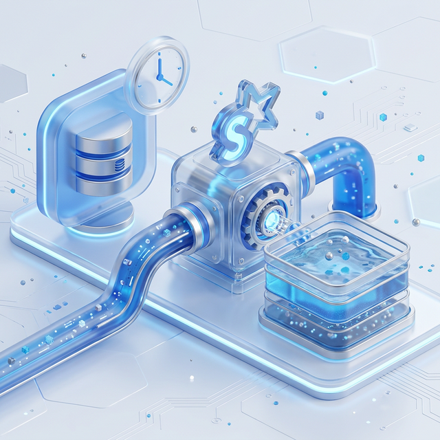

A deep dive into high-performance Batch and Real-Time synchronization patterns for modern data lakes.
Establishing a robust data bridge between operational databases and high-performance warehouse formats.
Designed for periodic synchronization, the batch pipeline utilizes PySpark's JDBC capabilities to reconcile state within Apache Iceberg table formats.

Workflow: Periodic extraction via JDBC -> MERGE INTO reconciliation -> Final state synchronization in the Hadoop Catalog.
The streaming pipeline leverages MySQL binlog mining to propagate changes with sub-second latency through a distributed messaging layer.
Workflow: Row-level change capture via Debezium -> Kafka transport -> Spark Structured Streaming ingestion -> Deduplicated Merge to Iceberg.
| Feature | Batch Pipeline | Streaming Pipeline |
|---|---|---|
| Latency | High (Minutes/Hours) | Low (Sub-second) |
| Source Impact | High (Heavy Queries) | Minimal (Log Mining) |
| Complexity | Lower | Higher (Kafka Required) |
| Reliability | Snapshot Isolation | Exactly-once Checkpointing |